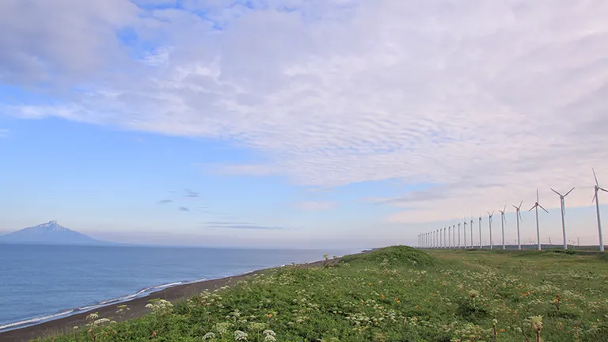
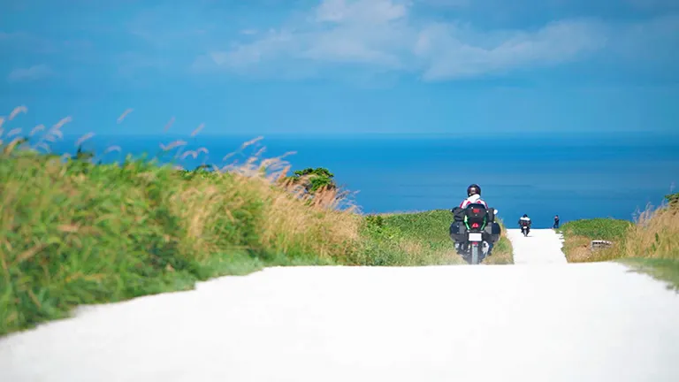
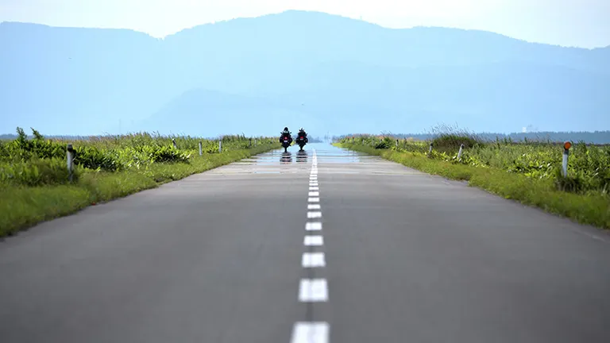
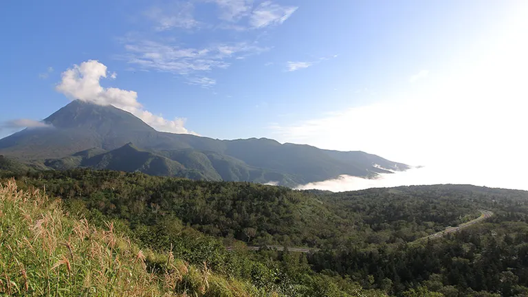
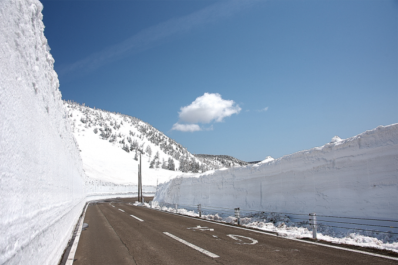

北海道・東北編 - ツーリングスポット
日本海オロロンライン

小樽から稚内までの約380kmの海岸沿いを走る道がオロロンラインである。道民でも休憩を含めて約7時間を想定するドライブウェイで、見どころスポットが満載である。走るだけで北海道を満喫できる絶景ルートである。 春は雪解けの残雪、夏は青い海と空、秋は冷たい風と夕日、冬は荒波と四季折々の美しい景色が楽しめる。北上ルートがおすすめで、常に海側車線を走るため、天売・焼尻の島々や利尻富士を一望できる。
おすすめポイント:
- 季節ごとに異なる絶景
- 道路状況が良好で、快適な走行が可能
- 日本海沿いを走る絶景ルート
アクセス情報:
- 住所: 北海道苫前郡苫前町
- 最寄りIC: 各地のIC
- 駐車場: 各休憩スポットに無料駐車場あり
宗谷丘陵「白い道」

北海道のツーリングスポットでも有名な宗谷丘陵の白い道である。晴れていれば、青い空と貝殻を砕いて作られた白い道、そして海が見える最高のツーリングスポットである。記念撮影をするライダーも多く見られる。 宗谷丘陵のなだらかな景色の中、白い道と海が見渡せる素晴らしい景色に感動する。日本最北の稚内に行くには時間がかかるため、「到達した！」という達成感も大きい。
おすすめポイント:
- 四季折々の自然が楽しめる
- オンロードバイクでも走行可能
- 海をバックに写真スポットが多数
アクセス情報:
- 住所: 北海道稚内市
- 稚内市街からは30分
- 駐車場: 無料駐車場あり
エサヌカ線

「エサヌカ線」は、北海道の猿払町に位置し、オホーツク海沿いに約7km続く直線道路である。直線の美しい道が続くこのルートは、ツーリング愛好者にとって憧れのスポットであり、多くのライダーから長年愛されている。 ツーリング雑誌やツーリングイベントでも度々取り上げられるこのエサヌカ線は、北海道の雄大な自然と海の美しい景色を満喫できる絶景ポイントとして、ライダーたちの間で一度は走ってみたい場所として知られている。
おすすめポイント:
- まっすぐな一本道で開放感
- 季節ごとに変わる景色
- 障害物はなく絶好のフォトスポット
アクセス情報:
- 住所: 北海道猿払町
- 国道238号線、道の駅さるふつ近く
- 駐車場: 道の駅さるふつに無料駐車場あり
知床横断道路

知床横断道路は、1964年に全国で23番目の指定を受けた「知床国立公園」の一部であり、2005年には世界自然遺産に登録された知床半島の中心部を通る道である。知床半島は、アイヌ語で「sir・etok（シリ・エトク）」と呼ばれ、大地の突き出た部分や鼻先を意味する。半島の先端部は自動車道がなく、徒歩や船でしかアクセスできないため、知床横断道路を走ることで秘境の一部を体験できる。
おすすめポイント:
- 絶景のワインディングロード
- 四季折々の絶景
- 自然とのふれあい
アクセス情報:
- 住所: 北海道目梨郡羅臼町遠音別村 知床峠
- 国道334号線、知床峠付近
- 駐車場: 展望台周辺に無料駐車場あり
八幡平アスピーテライン

岩手山を眺望する山岳路で県境を越える絶景道、「八幡平アスピーテライン」は、東北屈指の絶景ルートである。このアスピーテラインは、岩手県と秋田県の県境に広がる楯状火山「八幡平」を貫通する全長約35.3kmの山岳ワインディングロードで、自然豊かな風景とともに四季折々の美しい景色を楽しむことができる。 八幡平は標高1613mの頂上を有し、ブナの森や原生林に囲まれた山岳地帯である。八幡平アスピーテラインはその山頂を通る道であり、緩やかな傾斜の山道を登りながら、岩手山や八幡沼の美しい景色を眺めることができる。かつて有料だった区間は約26kmで、現在は無料で通行できる。
おすすめポイント:
- 絶景の山岳ワインディングロード
- 雪の回廊の美しさ
- 豊かな自然と温泉
アクセス情報:
- 住所: 岩手県八幡平市松尾寄木
- 最寄りIC: 東北自動車道 松尾八幡平IC
- 駐車場: 無料駐車場あり